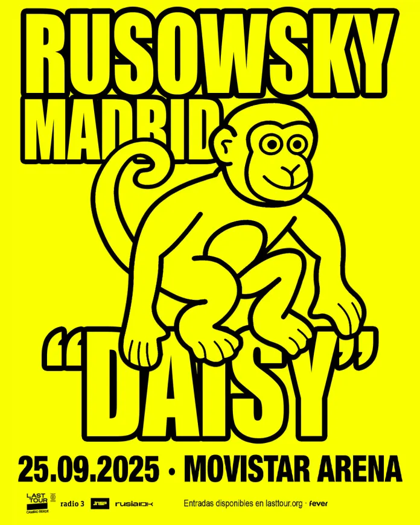

El diseño gráfico de portadas de música es una parte esencial de la identidad visual de un álbum o sencillo. Una portada bien diseñada puede atraer a nuevos oyentes, comunicar el estilo del artista y hacer que una producción destaque en plataformas
digitales o físicas.

VIDEOCLIPS DESTACADOS DENTRO DE LA CULTURA DEL TRAP
El trap es un género musical que se originó en el sur de EE. UU. y se caracteriza por sus ritmos electrónicos, sintetizadores, cajas de ritmos y uso de autotune, con influencias del rap, el hip hop y otros estilos. A menudo reivindica temas
como la vida en barrios marginales, la supervivencia, el dinero, las drogas y el sexo, relatando vivencias y realidades que los jóvenes sienten como auténticas.